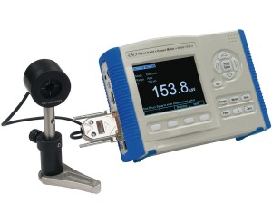

- Sat 04 April 2015
- Electronics

Optical power meters in-conjunction with a detector are used to measure power from a laser source or monochromatic output.
At work, we use Newport 1918 power meter. This power meter comes with its own software. However, I was interested in controlling this instrument with python.
I wrote a python module for communicating with this instrument. This python module contains higher level functions to communicate with Newport 1918 power meter on a Windows computer. It uses python library ctypes to access methods in the Newport's usbdll.dll driver.
Note: You can read the documentation and download the module from my github account
For connecting the hardware to the computer, see the reference manual